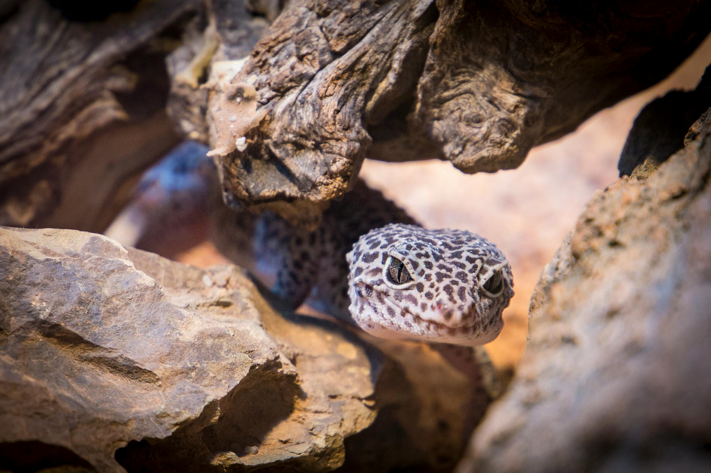

Welcome to Our Gecko Guide

Black and Gray Gecko by Pexels.
The leopard gecko is a popular reptile species known for its distinct spotted patterns and calm behavior. This website is your guide to learning more about their habitat, care requirements, and interesting facts.